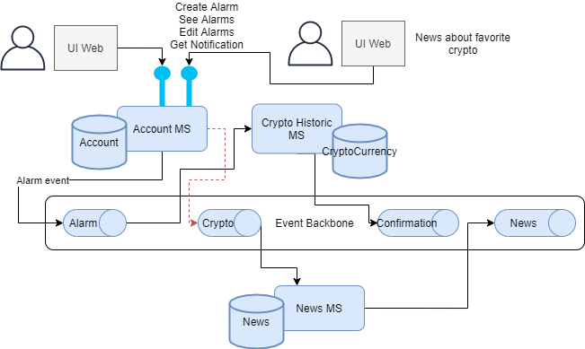
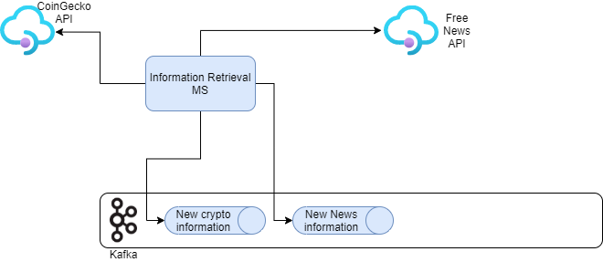

Business Scenario
Scenario Overview
In the application CryptoTracker we have a scenario based on tracking multiple crypto coins and providing the users with tools to support their actions. In the following Scenario we follow the addition of adding an alarm.
Architecture
System Context
There are four main microservices implemented in this architecture. They serve different purposes through the application. The ones involved in the creating and maintence of an alarm are the Account management module, the information retrieval module and finally the crypto historic module.
Components view
Deploying the different components using an event-driven and microservice pattern, we organize our modules like the following picture
1 - Top left represents our user interface, implemented to support our various functionalities, in this case our alarm creation and monotorization
2 - The event backbone is used to define a set of topics used in the different microservices and event sourcing for these as well.

1 - As with the above diagram here our Information retrieval microservice upon receiving new information creates an event.
2 - The News microservice uses this new information to update its database.
3 - The Historic microservice notifies the machine learning module that there is new information.
4 - The Machine learning module sends new predictions.
Summary of microservices scope
| Component | Github Repository | MVP level | Language(s) | Description |
|---|---|---|---|---|
| User Interface | Cryptotracker-frontend | 2 | React.js | User interface to interact with the backend |
| Account microservice | Cryptotracker-accountModule | 3 | Spring Boot Java | Contains the users database as well as support for some of the interactions such as alarms |
| Historic microservice | Cryptotracker-history | 2 | Spring Boot Java | Keeps track of the cryptocurrencies and exposes that information to the frontend as well as communicating with the ML module |
| News microservice | Cryptotracker-repository | 1 | Spring Boot Java | Saves the news and provides functionality of queries to the frontend |
| Machine Learning module | Cryptotracker-mlModule | 3 | Python | Gives prediction on the different cryptocurrencies with the historic microservice information |
| Information retrieval microservice | Cryptotracker-retrieval | 2 | Spring Boot Java | Communicates with the various API's and publishes the information to the backend |
Microservices Overview
An overview of the microservices:
User Interface

Description: The user interface for our CryptoTracker Application is implemented using React.js and communicates with the different backend API's.
- Log in
- Create Alarm
- Add Favourite Crypto
- List All cryptos
- Give detailed information on each crypto
- Notify user of a new occurrance on their alarm
Account Microservice

Description: The Account microservice is one of the main modules that takes care of all user information including:.
- Saving Alarms
- Verifying if an alarm is true
- Saving favourite Coins
- Saving users (Registration with security)
- Notifying User (front-end direct stream communication and email)
Historic Microservice

Description: The Historic microservice is another of the main modules that takes care of all things regarding the main functionality of the application:
- Saving crypto information
- Showing crypto information to the front-end
- Giving detailed information on each crypto
- Giving a machine learning prediction (by communicating with the ML module)
- Confirming if user alarms are true
News Microservice

Description: The news microservice takes care of relying crypto information to the user:.
- Saving News
- Giving tailored news according to user specifications
Machine Learning module

Description: The Machine learning module works closely with the historic module to provide predictions:.
- Gives accurate predictions depending on crypto currencies behaviors
Information Retrieval Microservice
Description: The Information Retrieval microservice feeds information into the other backend microservices:.
- Communicates with the News API and publishes it to the topic
- Communicates with the Crypto API and publishes it to the topic